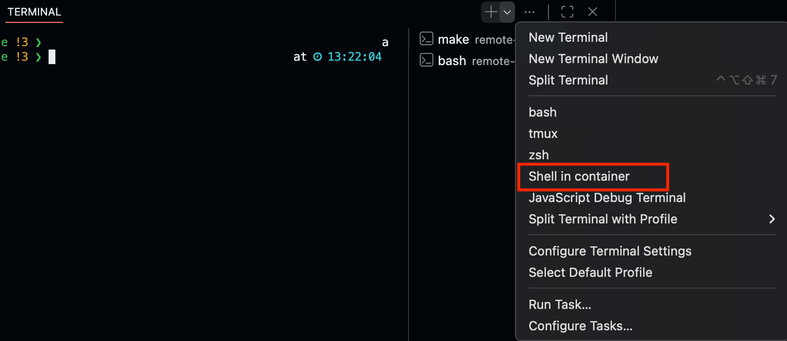
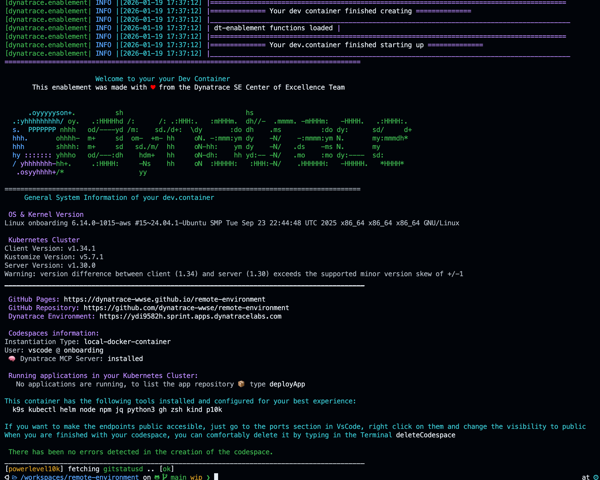
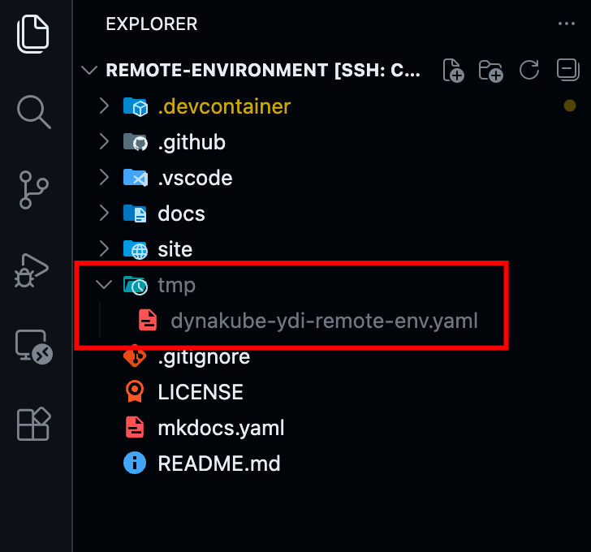
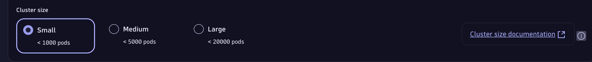
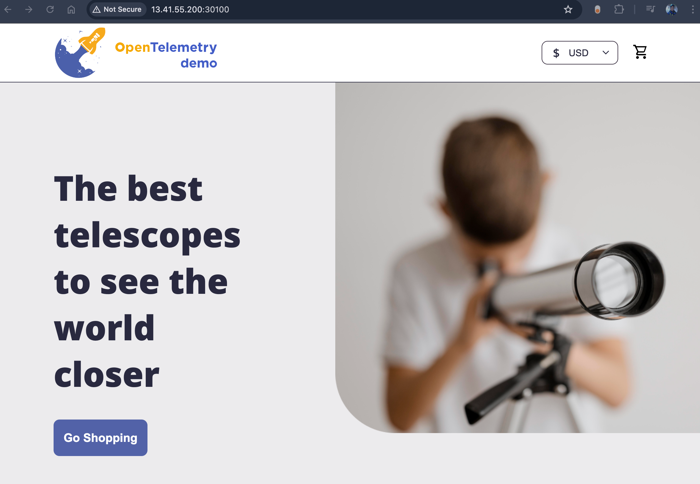
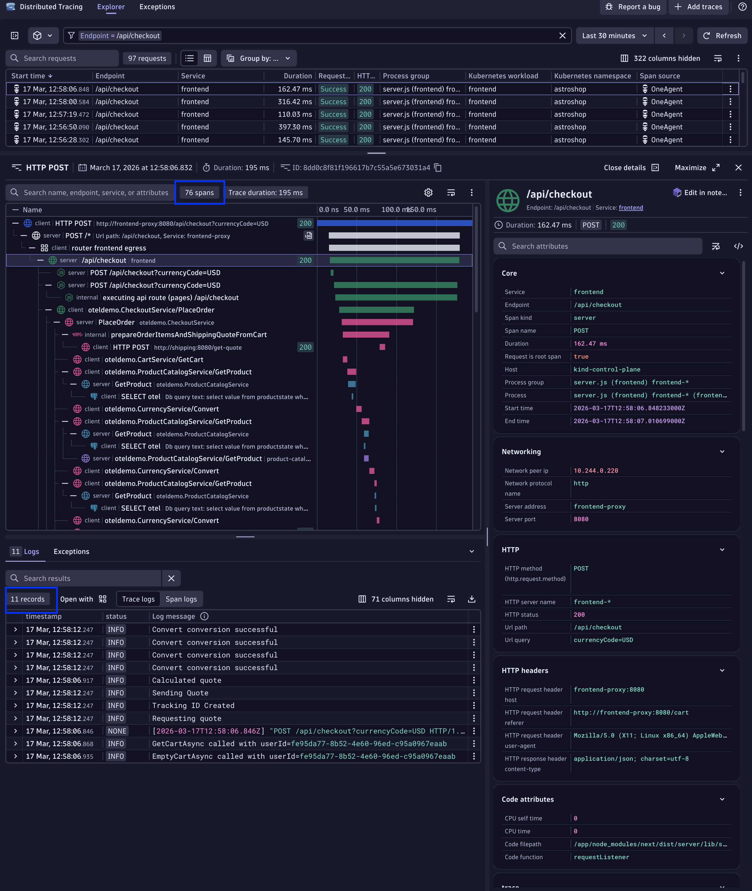

Launch and Monitor#
1. Launch the enablement environment#
1.1 Start the dev container#
We are ready to start the environment, open a new Terminal and go to the .devcontainer folder and start the container.
make start will either start the environment or attach a new shell to the container in case it is running. The following environment is only configured to create and start a Kind Cluster.
Protip: Launch a Terminal inside the container wich one-click
So you don't have to type every time cd .devcontainer && make start every time to lauch the container or shell into it, there is a preconfigured terminal for you. On the terminal tab, click on the v icon, and select the profile "Shell in container", this will either shell in the active running container, start it if it has been stopped or create a new one if it does not exist.

Inside the Dynatrace enablement container
You should be able to see a Dynatrace logo and some basic information of the container when you start the container or shell into it.

2. Monitor the Kubernetes cluster#
We will monitor the Kubernetes cluster running in the environment, for this type the following commands to get a quick overview of whats running inside Kubernetes
You'll notice this is a single node cluster (kind) and it has the minimum kubernetes services such as etcd, api-server, scheduler and proxy running on it.
2.1 Install the Dynatrace Operator#
We install the Dynatrace Operator using HELM same as in the public documentation or installation wizard we just opened.
helm install dynatrace-operator oci://public.ecr.aws/dynatrace/dynatrace-operator \
--create-namespace \
--namespace dynatrace \
--atomic
2.2 Deploy Dynakube with Cloud Native FullStack#
Transfer the Dynakube file to the server#

Copy and paste the dynakube file to the server. Using VS Code is a piece of cake. I recommend to create a tmp folder inside the repository since this is omitted in .gitignore therefore no files inside of it will be staged. Right mouse click and create new folder, then copy the downloaded dynakube.yaml file and paste it inside the folder. VS Code will do the SSH transfer for you.
Change ressource allocation for the Dynakubes (ActiveGates)#

Before, in the start monitoring Kubernetes Cluster wizard, there is a section where you selected the cluster size. Dynatrace configures the Dynakube(s) depending on the Cluster size selected, this to make sure that the deployment has enough capacity to ingest monitoring signals ufor more than 20´000 pods per Cluster. If you click on the (i) next to the cluster size, will lead you to the sizing guide where you can read more about it.
We are going to adapt the ActiveGate ressources since we have a small single-node cluster.
Open the Dynakube yaml file in VS Code, the structure looks something like this:
apiVersion: v1
kind: Secret
data:
#...
---
apiVersion: dynatrace.com/v1beta6
kind: DynaKube
metadata:
name: onboarding
#...
---
apiVersion: dynatrace.com/v1beta6
kind: DynaKube
metadata:
name: onboarding-agents
#...
The --- line in yaml separates objects allowing you to add multiple objects or files withing one YAML file. The Dynakube has 3 files, the Secret containing the secrets generated by the wizard and two dynakubes. Splitting ActiveGate responsibilities into two groups is a best practice: One group handling everything related to Kubernetes platform monitoring, including KSPM, and the other managing Agent traffic routing, telemetry ingest, and extensions. This separation provides several advantages more here.
We'll keep the best practice of having 2 dynakubes, although we could pack the capabilities into one Dynakube but we would be breaking the separation of concerns pattern. Since we hare trimming down the ressources, we keep good practives even in our small environment. We'll modify the ressources of both ActiveGates (as shown in the extract below) and the number of replicas, we don't need more than one per ActiveGate deployment.
#...
activeGate:
capabilities:
- kubernetes-monitoring
resources:
requests:
cpu: 100m
memory: 512Mi
limits:
cpu: 500m
memory: 768Mi
replicas: 1
#...
activeGate:
capabilities:
- routing
- debugging
resources:
requests:
cpu: 100m
memory: 512Mi
limits:
cpu: 500m
memory: 768Mi
replicas: 1
Deploy the Dynakubes using kubectl#
command not found -> Are you on inside the container?
Remember, if you get an error such as command not found for kubectl, helm or k9s, most likely you are not inside the container. You'll need to do a make startinside the .devcontainer folder. More information about it in the section Day to Day Operations
Verify all dynatrace components are up and running
❯ kubectl get pod -n dynatrace
NAME READY STATUS RESTARTS AGE
dynatrace-oneagent-csi-driver-rkjvw 4/4 Running 0 5m20s
dynatrace-operator-5d88696947-f8rkd 1/1 Running 0 5m20s
dynatrace-webhook-85799477c4-5gwhn 1/1 Running 0 5m20s
dynatrace-webhook-85799477c4-gcjdg 1/1 Running 0 5m20s
remote-environment-activegate-0 1/1 Running 0 3m35s
remote-environment-agents-activegate-0 1/1 Running 0 3m35s
remote-environment-agents-oneagent-hdr47 1/1 Running 0 3m25s
remote-environment-extensions-controller-0 1/1 Running 0 3m25s
remote-environment-otel-collector-0 1/1 Running 3 (2m35s ago) 3m26s
3. Deploy the Astroshop#
In the terminal inside your dev.container, type:
This will deploy the Astroshop for you.Once it's deployed, navigate to the public ip of your server and enter the http://PUBLIC-IP:30100. The framework exposes the apps using the ports 30100, 30200, 30300 using a NodePort configuration.

What we have done
That's it! You have successfully set up a remote enablement environment with the Astroshop being monitored with Dynatrace CloudNative FullStack. You've configured VS Code to shell securely into the server so this setup can boost your learning experience.
Protip: accessing the onboarding server with a public ip OR local dns
Public IP: If you don't know the public IP by heart, you can also type inside the terminal the following command to generate an http link pointing to the port 30100 of the public ip:
DNS: you can also add the public IP and hostname to the hostfile on your machine, similar as we did for the SSH Configuration. This way you'll be able to access the Astroshop with the URL http://onboarding:30100 from your machine.3.1 Expose the Astroshop on http#
In the terminal inside your dev.container, type:
This function will route the traffic from 30100 to HTTP (80). The application can still be accessed via 30100 port but as well as in HTTP. This is only for convenience since corporate firewalls block traffic on those high port numbers.Can't access the app via publicIp:30100 -> Are you on inside VPN?
Some VPNs and corporate networks blocks traffic of higher ports, hence the function exposeOnHttp will route the traffic to port 80 so you can access the app easier.
Dive into the next section to learn about day-to-day operations with your enablement environment.
3.2 Verify Tracing visibility on the Astroshop#
If you want to verify the tracing visibility is as expected with Opentelemetry Traces and code-level visbility into the pods of the astroshop, a quick check is to visualize a trace for the checkout process.
Go to the Distributed Tracing App and search for the checkout traces. Endpoint = /api/checkout When a product is bought, almost all services are called. The trace should look like this:

A single checkout trace includes around 70 spans and 10 log entries (depending on the amount of products purchased).